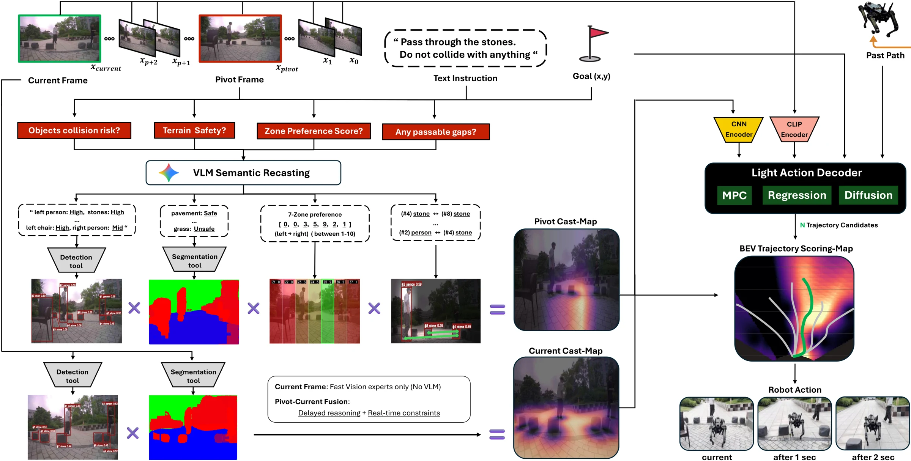
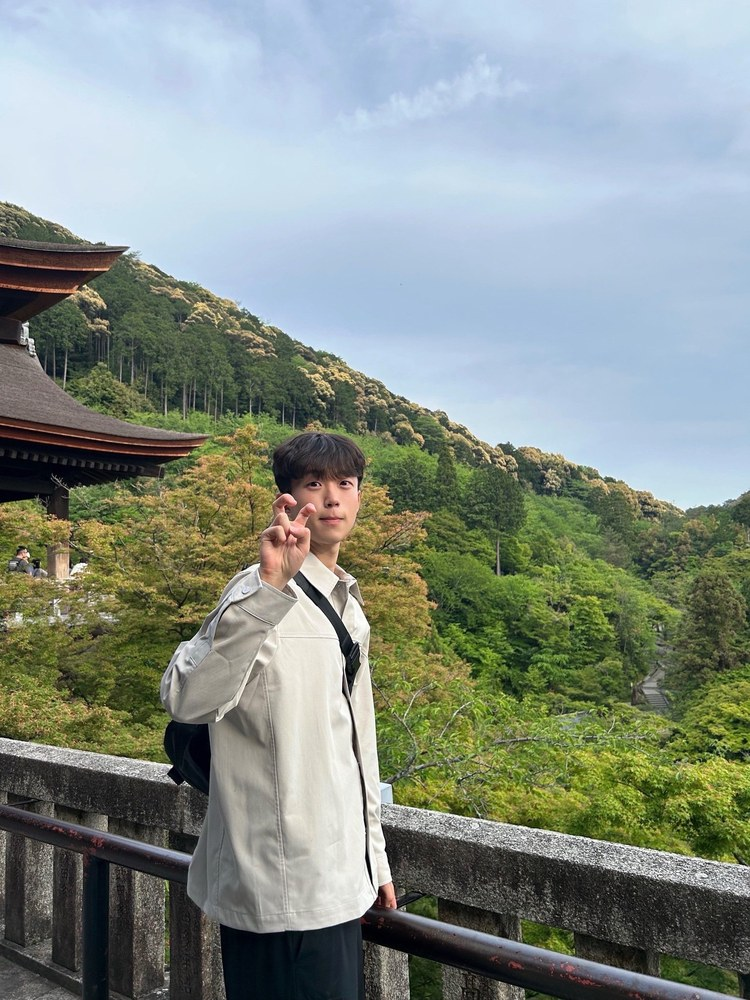
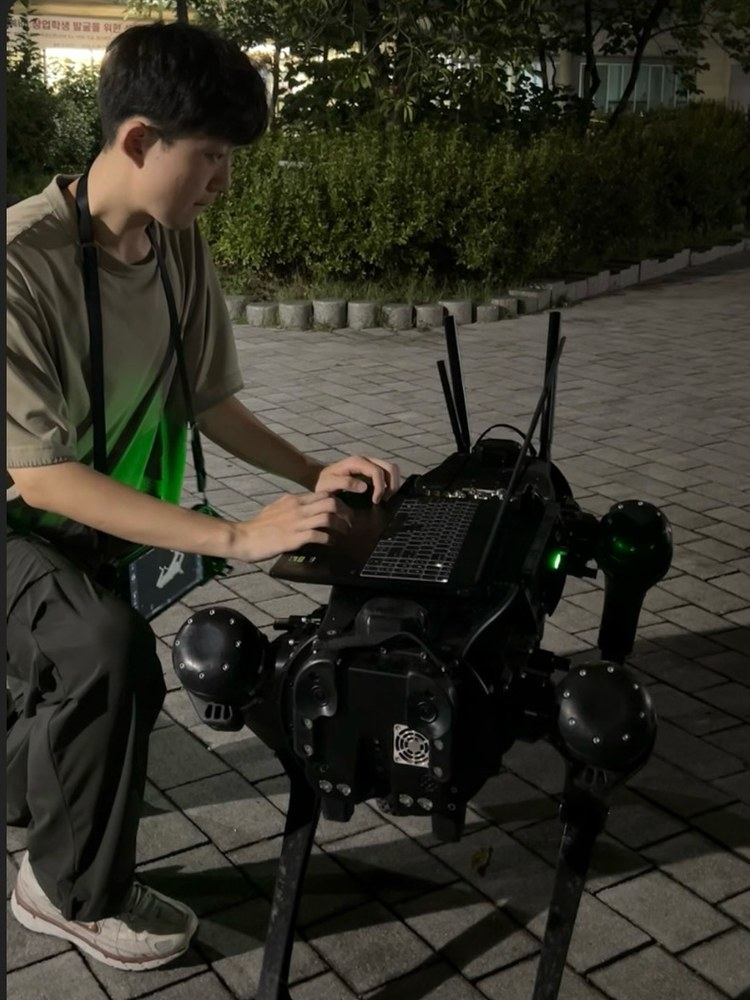
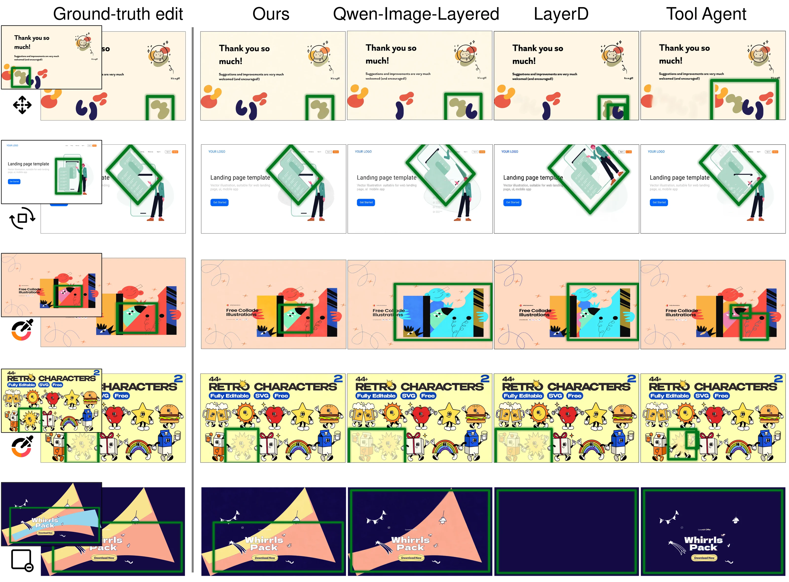
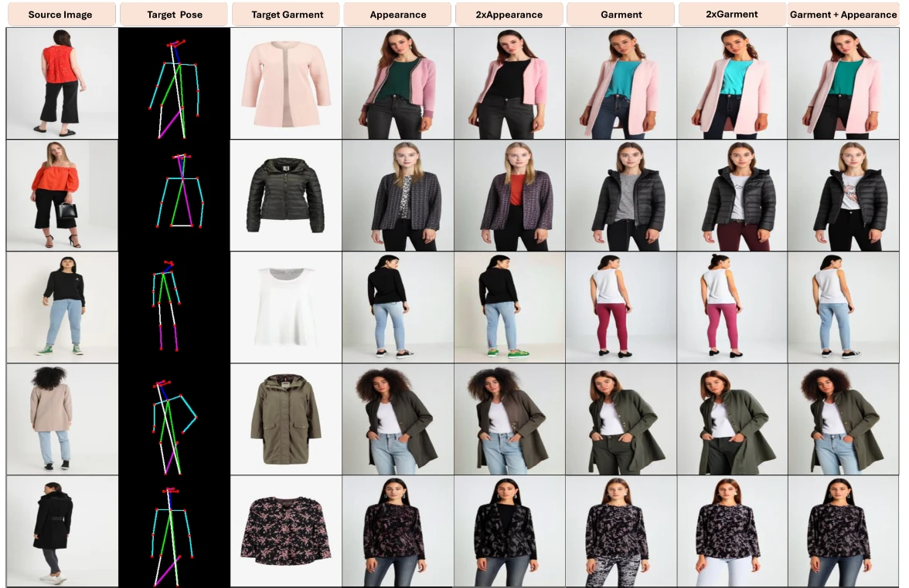
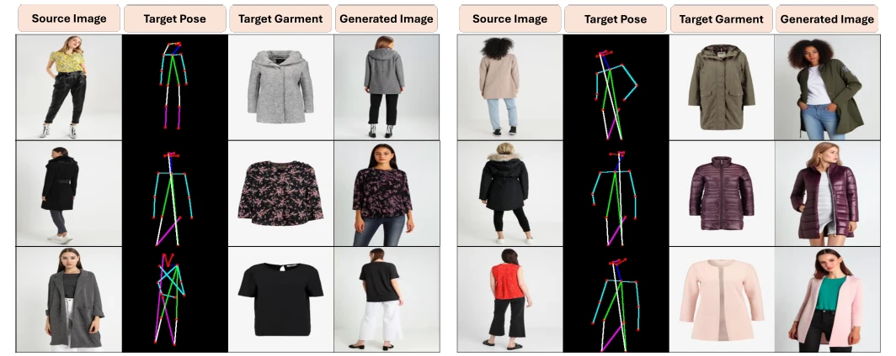
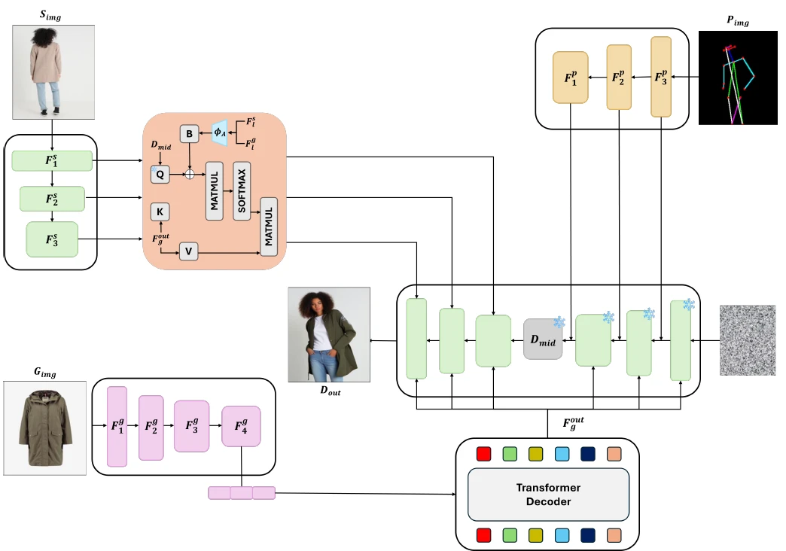
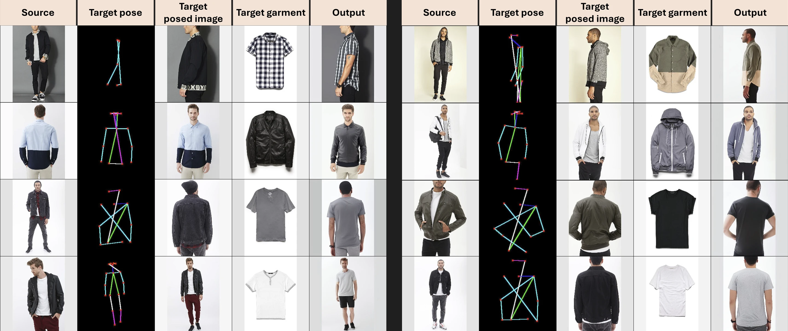

Words to Waypoints: Real-Time Instruction-Following Navigation on a Quadruped Robot
Under review, 2026
paper soon


sonjt00@kaist.ac.kr
I'm a Ph.D. student at Kim Jaechul Graduate School of AI, KAIST, advised by Professor Jaegul Choo. My current research interests lie in spatial reasoning for action policies, so that robots and agents can read a scene and act on it.

Under review, 2026



European Conference on Computer Vision (ECCV), 2026




International Conference on Computer Vision Theory and Applications (VISAPP), 2025 · Oral
In progress, 2026
Long-horizon VLA failuresparse robot & object pose coverageaction-space underfitting
statistical bottleneck localisationrecovery trajectoriesmodular framework for learning better from training data
Samsung Electronics Research collaboration · Main participant
KIST Center for Artificial Intelligence Korea Institute of Science and Technology · Student researcher
KAIST AI Undergraduate research intern · Prof. Jaegul Choo
Republic of Korea Air Force Mandatory military service
KAIST AI Integrated M.S./Ph.D. · Advisor: Prof. Jaegul Choo · GPA 4.1 / 4.3
Korea University B.S. in Business, Computer Science (double major) · GPA 4.29 / 4.5